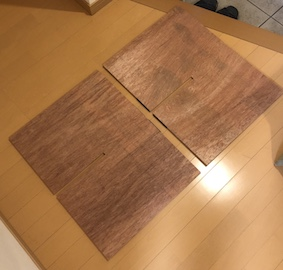
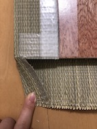

2.イスの脚用の板に130mmくらいの切り込みをジグソーを使ってつくる

3.一度、切り出したパーツを組み立てる
4.座面用の板にカーペット用の両面テープを貼る
5.クッション性を高めるためのコルクマットを先ほどの両面テープを貼った面に貼り付ける
6.5の工程で作った座面をい草で包み、テープで仮止めする
（い草をカットするときはほつけないよう、あらかじめ養生テープを貼っておく）

7.角部分の処理として、写真のようにい草が折り込みやすいよう、一部分を切り取る

8.全ての角の処理が終わったら、イスの脚部分とのズレを少しでも解消するために
座面の裏側にマジックテープを貼り、タッカーで留める
9.座面と同様に脚部分もマジックテープを細めに切ったものを貼り、タッカーで留める
10.各パーツを組み合わせたら完成！